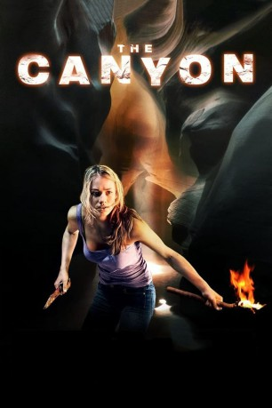

#11332 The Canyon
 
 IMDB-Wertung: 5.9 / 10
IMDB-Wertung: 5.9 / 10  Tomatometer: 27
Tomatometer: 27  Metascore: 0
Metascore: 0 
Das frisch vermählte Pärchen Nick und Lori beschließt, keine 08/15 Hochzeitsreise zu veranstalten, sondern den Grand Canyon zu erkunden. Doch ohne ortskundigen Führer geht das nicht. Als dieser jedoch inmitten der zerklüfteten Landschaft von einer Schlange gebissen wird, gerät der Ausflug zum Horrortrip…
Jahr: 2009
Dauer: 97 Minuten
FSK: 16
Land: USA Studio: Truly IndieTonspuren: DD2.0 - ,
Untertitel:
Auflösung: 1080p (1920x800) Größe: 5109 MB
Genre: Thriller
Regisseur: Richard Harrah
Drehbuch: Steve Allrich
Soundtrack: Heitor Pereira
Darsteller:
Datei: X:\NEU\Canyon, The (2009, FSK16, 1920x800).mkv seit 19.06.2019
 Es gibt insgesamt 187 Filme in der Gruppe 'NEU'
Es gibt insgesamt 187 Filme in der Gruppe 'NEU'